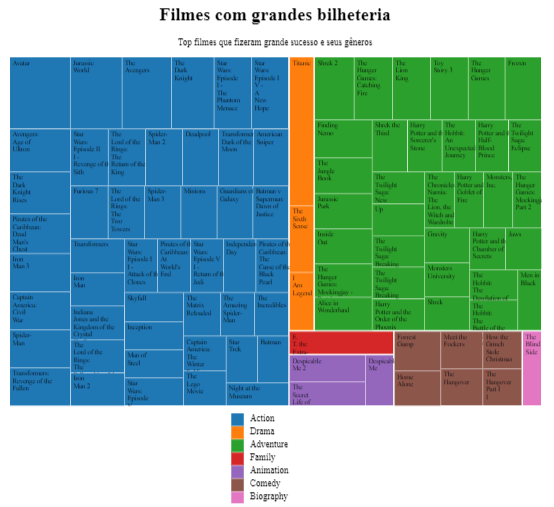
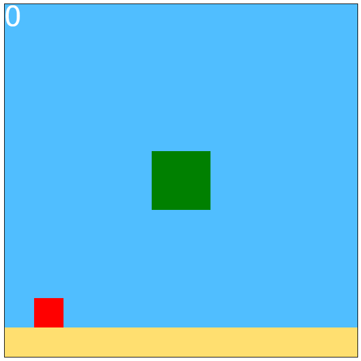

Alguns projetos meus
-
 Esse é um mapa que mostra em que regiões a mais educação superior nos EUA, o qual foi feito com JS e a biblioteca D3js.
Esse é um mapa que mostra em que regiões a mais educação superior nos EUA, o qual foi feito com JS e a biblioteca D3js.
-  Esse é outro gráfico feito com D3js, mas dessa vez é um mapa de árvore, que mostra a relação entre as bilheterias de filmes famosos.
-  Esse é um jogo simples feito em JS sem o uso de bibliotecas, nele você é um bloco e tem que pular sobre muros que aparecem em seu caminho.
-
 Para diferenciar dos outros projetos aqui mostrados, esse não é um site, e sim um código em python que fiz no google coolab que analisa os dados de um banco de dados sobre a saúde das pessoas.
Para diferenciar dos outros projetos aqui mostrados, esse não é um site, e sim um código em python que fiz no google coolab que analisa os dados de um banco de dados sobre a saúde das pessoas.